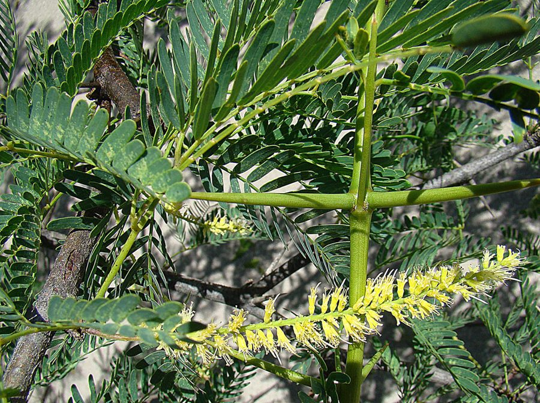

विलायती कीकरVilayati Kikar
Prosopis juliflora · Fabaceae · FLR-0039

- Scientific name
- Prosopis juliflora (Sw.) DC.
- Family
- Fabaceae
- Hindi
- विलायती कीकर
- Status here
- invasive
- IUCN
- not evaluated
When to look कब देखें
Present all year.
विलायती कीकर / Vilayati Kikar
Prosopis juliflora (Sw.) DC. — Fabaceae
विलायती कीकर (विलायती बबूल) — मध्य/दक्षिण अमेरिका से भारत लाया गया एक अत्यंत आक्रामक, कांटेदार और विनाशकारी विदेशी वृक्ष है। मूल रूप से इसे बंजर भूमि को हरा-भरा करने और जलावन लकड़ी के लिए पेश किया गया था, लेकिन आज यह पूर्वी उत्तर प्रदेश के ग्रामीण गोचरों (village pastures), शुष्क नदी-नालों और बंजर जमीनों के लिए एक बड़ा संकट बन गया है। इसकी जड़ें बहुत गहराई तक जाकर भूजल का तेजी से दोहन करती हैं, और इसके पत्तों व जड़ों से निकलने वाले जहरीले रसायन (allelopathic chemicals) इसके नीचे किसी भी देशी घास या पौधे को उगने नहीं देते। इसके नुकीले, जहरीले कांटे मवेशियों के पैरों में घाव कर देते हैं, जिससे यह स्थानीय चरागाहों की जैव विविधता को नष्ट करने वाली एक आक्रामक खरपतवार बन गया है।
Quick Identification त्वरित पहचान
| Feature | Description |
|---|---|
| Size & Shape | Small tree or multi-stemmed sprawling shrub (5–12 m tall) with low, weeping, zig-zag branches |
| Bark & Thorns | Rough, thick, fissured dark grey bark; pairs of sharp, stout, straight thorns (1–5 cm long) at leaf joints |
| Leaves | Bipinnately compound leaves, dark green, composed of numerous small, narrow, closely-spaced leaflets |
| Flowers | Small, greenish-yellow, cylindrical spikes (5–10 cm long) resembling catkins |
| Fruit & Seeds | Flat, straight or slightly curved cylindrical pods (10–20 cm long), pale yellow when ripe, containing hard seeds |
Field tip: Look for a low-branching, bushy tree with weeping zig-zag branches and long, straight, cream-colored thorns at the leaf bases. Unlike native Babool, its flowers are cylindrical yellow spikes (not round balls) and its pods are flat and straight, not constricted between the seeds.
Morphology आकारिकी
Biometrics (typical measurements in the Gangetic plain):
| Feature | Measurement |
|---|---|
| Tree height | 5–12 m |
| Leaf length | 5–15 cm |
| Leaf width | 2–4 mm (leaflets) |
| Flower diameter | 3–5 mm |
| Fruit dimensions | 10–20 cm long, 8–12 mm wide |
Habit: Small tree or large sprawling shrub with a low canopy, zig-zag branches, and a semi-weeping growth habit. It grows in dense, impenetrable thickets that exclude all other vegetation.
Bark & Thorns: Bark is rough, thick, fibrous, dark grey or blackish. Strong, sharp, yellowish thorns (1–5 cm long) are arranged in pairs at the nodes, capable of puncturing vehicle tires and cattle hooves.
Leaves: Alternate, bipinnately compound, 5–15 cm long. Each leaf has 1–2 pairs of pinnae, with each pinna bearing 12–25 pairs of small, narrow leaflets (5–15 mm long and 2–4 mm wide), which are smooth and dark green.
Flowers: Small, 3–5 mm across, arranged in dense, cylindrical, axillary spikes 5–10 cm long. The flowers are pale greenish-yellow and lightly scented.
Fruit & Seeds: The fruit is a flat, compressed, straw-yellow or pale yellow pod, 10–20 cm long and 8–12 mm wide. The pod is straight or slightly curved, thick, and contains 10–20 hard, oval, shiny brown seeds embedded in a sweetish, spongy pulp.
Ecological Role पारिस्थितिक भूमिका
Destructive invasive colonizer. Originally introduced to stabilize soils, Prosopis juliflora has become an ecological disaster in eastern UP.
- Groundwater depletion: Its taproot system can reach depths of over 30 metres, drawing down the local water table faster than native species and drying up seasonal agricultural wells.
- Allelopathic exclusion: The leaves and roots exude allelopathic chemicals that accumulate in the soil, preventing the germination of native grasses (Cynodon dactylon) and herbs, leaving the ground beneath the canopy bare and sterile.
- Monoculture thickets: It outcompetes native flora, forming monoculture thickets that provide poor habitat for native birds and insects.
Life Cycle / Phenology जीवन चक्र
- Germination: High germination rates; seeds are encased in hard coats that are scarified when eaten by goats and cattle, spreading rapidly through dung.
- Growth: Extremely fast-growing, producing seeds within 3 years.
- Leaf phenology: Evergreen, maintaining leaves even during the peak of dry summer when native trees shed theirs.
- Flowering & Fruiting: Twice a year (March–June and September–November), producing massive quantities of pods.
- Resilience: Highly resistant to coppicing, cutting, and fire; it regenerates rapidly from the root crown if cut.
Host Plants or Prey आहार
Prey / Beneficiaries:
- Insects: Visited by generalist bees and flies, but supports far fewer native insect species than native Babool.
- Mammals: Pods are eaten by goats and sheep, which disperse the seeds.
Predators / Natural Enemies शत्रु
- Seed predators: Bruchid beetles (Algarobius spp.) infest and destroy some seeds inside mature pods.
- Control efforts: Mechanical uprooting of the root system is the only effective control method.
Agricultural / Human Relevance कृषि और मानव संबंध
Traditional and Ethnobotanical Use
Because it is an exotic invasive species, Prosopis juliflora has limited integration into the traditional Ayurvedic system of eastern UP:
- Specific medicinal preparations:
- Antimicrobial Wash: Local pastoralists boil the fresh leaves in water and use the aqueous extract as an antimicrobial wash to clean infected wounds on livestock.
- Oral Hygiene: The young twigs are occasionally cut and used as chewing sticks (datun) for oral hygiene, though native Neem and Babool are highly preferred.
- Charcoal Production: While the live tree is a pasture weed, its hard wood is harvested by local brick kilns and charcoal makers to produce low-cost fuel.
- Religious or cultural significance in eastern UP: It has no positive religious or cultural significance. Unlike the native Babool, which is respected, Vilayati Kikar is viewed as a curse (shraap) that ruins common grazing lands (gauchar) and encroaches upon sacred village groves (Devasthals).
- Traditional ecological or seasonal knowledge: Local pastoralists know that cattle eating too many dry Vilayati Kikar pods develop jaw paralysis (jaw-lock) due to high sugar levels and toxins, leading to tooth loss. Its rapid spread is viewed as a sign of land degradation.
Expected Locally स्थानीय रूप से अपेक्षित
Not a field record. Written from published accounts for eastern Uttar Pradesh. No confirmed local sighting yet — if you have seen it, that is what the atlas needs.
अभी तक स्थानीय पुष्टि नहीं। यह विवरण प्रकाशित स्रोतों से है, किसी अवलोकन से नहीं।
A highly visible weed encroaching upon the banks of the Saryu and Kuwano rivers and clogging dry drainage canals (nala margins) in Basti district. It has taken over large portions of the village pastures (gauchar lands), leaving local goat-herders struggling to find native grasses. The sharp thorns are a constant hazard to barefoot farmers and tractor tires in rural fields.
Distribution वितरण
Global range: Native to Mexico, Central America, and northern South America. Widespread as a highly invasive weed across arid and semi-arid regions of Asia, Africa, and Australia.
In India: Introduced in the late 19th and early 20th centuries, now invasive across almost all plains and coastal states.
In Uttar Pradesh: Abundant and highly invasive in all districts, particularly in central, western, and eastern UP plains.
In Basti district / eastern UP: Common along degraded roadsides, dried riverbeds, and village commons.
Range notes: Active eradication is required to protect native biodiversity.
Research Questions शोध प्रश्न
Anyone can investigate these | कोई भी इन प्रश्नों की जाँच कर सकता है
- How many native plant species can grow within a three-metre radius of a mature Vilayati Kikar tree compared to a native Babool tree? — Conduct a vegetation survey in village commons.
- What is the frequency of livestock injuries caused by Vilayati Kikar thorns in your village? — Interview local veterinarians and livestock owners.
- Does mechanical cutting without root removal result in denser regrowth of the canopy? — Monitor cut stumps over one year.
- How far do goats transport viable Vilayati Kikar seeds from the parent tree? / बकरियाँ विलायती कीकर के व्यवहार्य बीजों को जनक वृक्ष से कितनी दूर तक पहुँचाती हैं? — Track grazing paths and collect dung samples to test seed germination.
- What is the difference in soil moisture levels under a Vilayati Kikar thicket compared to an open grassland? — Measure soil moisture at varying depths.
Similar Species मिलती-जुलती प्रजातियाँ
| Species | How to tell apart | हिंदी |
|---|---|---|
| native Babool (Vachellia nilotica) | Native; bright yellow round flower heads; pods constricted between seeds (like a necklace); leaves valuable fodder; provides high-quality timber | देशी बबूल — गोल पीले फूल, माला जैसी फली, मूल्यवान लकड़ी |
| White-thorned Kikar (Vachellia leucophloea) | Native; yellowish-white bark; small pale yellow flower heads; pods are flat but not sweet | रोंज बबूल — सफेद छाल, देशी |
| Shisham (Dalbergia sissoo) | Native; large tree with single rounded leaves; flat papery pods; no thorns | शीशम — कांटे रहित, गोल पत्ते |
Field rule: Sprawling tree with zig-zag weeping branches, pairs of straight yellowish thorns, pale yellow cylindrical flower spikes (not round), and flat straight pods identify the invasive Vilayati Kikar.
Taxonomy & Classification वर्गीकरण
Original description. Olof Swartz described this species as Mimosa juliflora in 1788 in his work Nova Genera et Species Plantarum seu Prodromus (p. 85). It was transferred to the genus Prosopis by Augustin Pyramus de Candolle in 1825 in Prodromus Systematis Naturalis Regni Vegetabilis (Vol. 2, p. 447). The genus name Prosopis is an ancient Greek name for a plant, and juliflora is derived from the Greek meaning "downy-flowered" or resembling catkins.
Subspecies. Monotypic in the invasive Indian range.
Family and order placement. Placed in the order Fabales, family Fabaceae, subfamily Caesalpinioideae (formerly Mimosoideae).
Phylogenetic notes. Prosopis juliflora is part of a complex of closely related species, including Prosopis pallida. They show high hybridization rates, making precise genetic identification of invasive populations complex.
IUCN status rationale. Not evaluated (NE) by the IUCN Red List, as it is a widespread invasive weed that faces no conservation threats.
Photo Gallery फोटो गैलरी
References संदर्भ
- Swartz, O. (1788). Nova Genera et Species Plantarum seu Prodromus. p. 85.
- Candolle, A.P. de (1825). Prodromus Systematis Naturalis Regni Vegetabilis. Vol. 2, p. 447. [generic transfer]
- Brandis, D. (1906). Indian Trees. Archibald Constable & Co., London.
- Saxena, S.K. (1984). Prosopis juliflora in the Indian arid zone. Journal of Arid Environments, 7(2), 115-126.
- Pasiecznik, N.M. et al. (2001). The Prosopis juliflora - Prosopis pallida Complex: A Monograph. HDRA, Coventry, UK.
- GBIF Occurrence Data — Prosopis juliflora, Uttar Pradesh (2010–2025).
Source file: species/flora/trees/vilayati_kikar.md